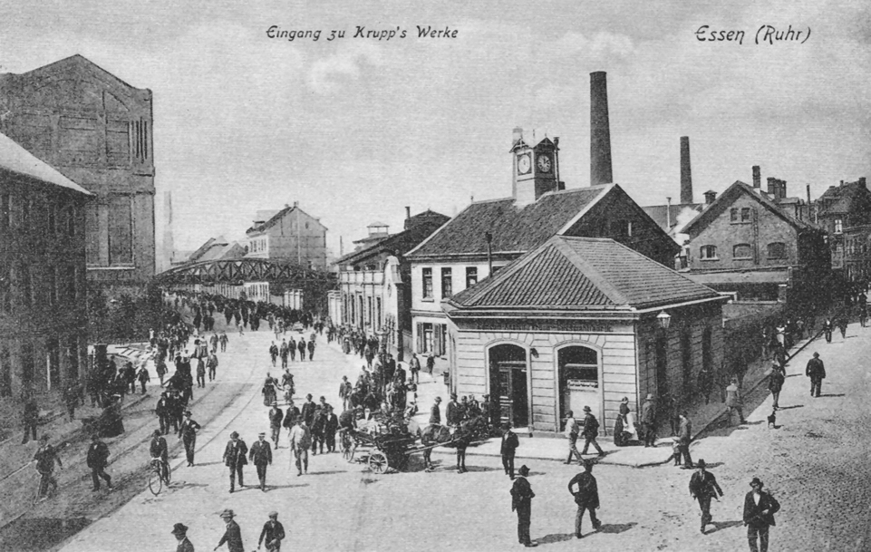
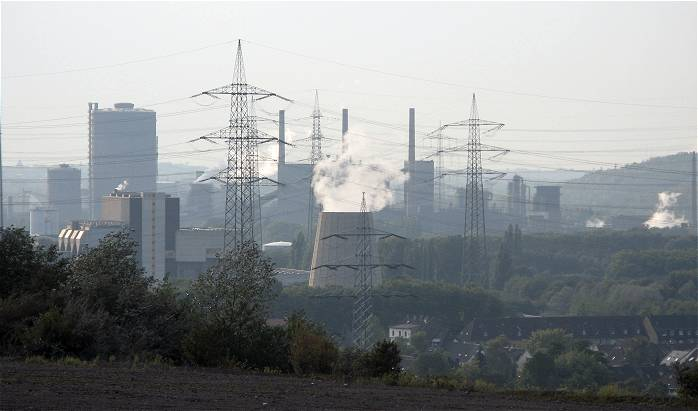

Überblick
Ausbreitung in Europa & USA bezeichnet die Diffusion der ersten Industriellen Revolution über Großbritannien hinaus: von Belgien und Frankreich über die deutschen Staaten und Mitteleuropa bis in den Nordosten der Vereinigten Staaten. Nach Vorbedingungen, technischer Hochphase von Dampf, Fabrik, Kohle und Eisen und der britischen Gesellschaftsgeschichte rückt hier die Frage in den Vordergrund, wie Maschinen, Fabriksystem, Kohle-Eisen-Komplex und Eisenbahn international übernommen, angepasst und staatlich forciert wurden. Der Prozess war weder Kopie noch gleichzeitiger Weltwandel: Er verlief regional, sektoral und politisch ungleichzeitig.
Großbritannien blieb bis weit ins 19. Jahrhundert technisch und kommerziell führend und versuchte zeitweise, Maschinenexport und Abwanderung von Fachkräften zu beschränken. Dennoch gelang der Transfer: britische Unternehmer und Emigranten, kontinentale Spione und Lehrlinge, Nachbau, Lizenzen und später ein freierer Maschinenhandel brachten Know-how nach Lüttich, Mulhouse, dem Ruhrgebiet und New England. Kontinentale und US-amerikanische Pfade unterschieden sich vom britischen Vorbild durch stärkere Staats- und Zollpolitik, gezielten Eisenbahnbau, neue Bankenformen und oft verzögerte, aber dann beschleunigte Schwerindustrie. Um 1850–1870 hatten Belgien, Teile Frankreichs und Deutschlands sowie der US-Nordosten Kerntechniken der ersten Welle beherrscht; zugleich zeichnete sich der Übergang zur zweiten Industriellen Revolution ab: Stahl, Chemie, Elektrizität und Großunternehmen.
Akteure
- William und John Cockerill: Britische Unternehmerfamilie; Maschinenbau und Hüttenwerke um Lüttich (Seraing); Symbol des frühen Technologieimports nach Belgien und auf den Kontinent.
- Belgischer Staat und Eisenbahngesellschaften: Ab den 1830er Jahren staatlich geplanter Schienenbau (u. a. Brüssel–Mechelen 1835); Katalysator für Kohle, Eisen und Maschinenbau.
- Französische Unternehmer und Textilregionen: Mulhouse, Lille, Lyon und Loire-Becken; langsamere, oft handwerksnahe Industrialisierung neben staatlicher Infrastrukturpolitik.
- Crédit Mobilier (Paris, ab 1852) und kontinentale Investmentbanken: Mobilisierten Kapital für Eisenbahnen und Großindustrie; Vorbild und Kontrast zum britischen Aktien- und Privatbankwesen.
- Friedrich List (1789–1846): Theoretiker des „Nationalen Systems“; plädierte für Zollschutz und Eisenbahn als Mittel nachholender Industrialisierung (u. a. Einfluss auf deutsche Debatten).
- Zollverein (ab 1834) und preußische Verwaltung: Binnenmarkt ohne Binnenzölle, Außenzoll gegenüber Dritten; Rahmen für deutsche Markteinheit und spätere Schwerindustrie.
- Ruhr- und Saarindustrielle, Maschinenbauer in Sachsen und Berlin: Träger von Kohle, Eisen, später Stahl und Maschinenbau in den deutschen Staaten bzw. im Kaiserreich.
- Samuel Slater (1768–1835): Britischer Mechaniker; brachte Spinnereiwissen nach Rhode Island (Slater Mill, 1793); frühes Symbol des US-Transfers trotz britischer Ausfuhrverbote.
- Francis Cabot Lowell (1775–1817) und die Boston Associates: Integrierte Baumwollfabriken in Waltham und Lowell (Massachusetts); kapitalintensive Textilindustrie im US-Nordosten.
- US-Eisenbahn-, Stahl- und Finanzmagnaten (späteres 19. Jahrhundert): Ausbau kontinentaler Märkte; Verbindung von Schiene, Kohle, Eisen/Stahl und protektionistischen Zöllen.
- Staaten, Zölle und technische Schulen: Kontinentale Regierungen förderten Lehranstalten, Subventionen, Patentpolitik und Schutzzölle; der Staat war oft aktiver als im britischen laissez-faire-Image.
- Arbeitsmigranten, Facharbeiter und Ingenieure: Träger stillen Wissens; Emigration, Abwerbung und Betriebsbesichtigungen unterliefen Exportverbote.
Was geschah
Belgien und Frankreich
Belgien gilt als erstes industrialisiertes Land des europäischen Kontinents. Kohle und Eisen im Becken von Lüttich und im Hennegau, Textil in Flandern und um Verviers sowie britischer Maschinenbau (Cockerill in Seraing) schufen früh einen kohle- und eisenbasierten Komplex, der dem britischen Muster näherstand als dem langsameren französischen. Nach der Unabhängigkeit 1830 antwortete der belgische Staat auf Marktverluste und politische Unsicherheit mit Infrastrukturinvestitionen: Die Bahnstrecke Brüssel–Mechelen (1835) gilt als erste kontinentale Eisenbahn im öffentlichen Betrieb; rasch entstand ein dichtes staatlich geprägtes Netz, das Kohle, Eisen und Transit (u. a. Richtung Rheinland) verband. Banken wie die Société Générale finanzierten Schwerindustrie. Belgien blieb klein, aber pro Kopf und sektoral früh „britisch“ industrialisiert.
Frankreich industrialisierte ungleichmäßiger und insgesamt langsamer. Revolution, Kriege und politische Instabilität um 1800 hemmten langfristige Kapitalbildung; nach 1815 überschwemmten billige britische Waren den Markt und provozierten Schutzzölle. Textilzentren (Elsass, Nordfrankreich), Kohle und Eisen an Loire und später in Lothringen sowie Maschinenbau wuchsen, doch Handwerk, Kleinstadt und Landwirtschaft blieben länger dominant. Der Staat übernahm erhebliche Kosten für Trassen, Brücken und Tunnel beim Eisenbahnbau; private Gesellschaften betrieben die Linien. Das Crédit Mobilier und verwandte Institute bündelten ab der Jahrhundertmitte Kapital für Schiene und Industrie. Frankreich erreichte keine britische Dominanz in Kohle und Baumwolle, entwickelte aber eigenständige Stärken (Luxus, Chemievorläufer, später Stahl und Elektrizität) und eine industrialisierte, aber sozial und regional fragmentierte Moderne.
Deutschland und Mitteleuropa

In den deutschen Staaten verzögerten politische Zersplitterung, Binnenzölle und schwächere Atlantikintegration den Take-off. Zugleich lagen Kohle (Ruhr, Saar, Schlesien), Eisen, Handwerkstradition und technische Bildung bereit. Der Zollverein (1834) beseitigte unter preußischer Führung Binnenzölle zwischen Mitgliedsstaaten und setzte einen gemeinsamen Außenzoll; er schuf einen größeren Binnenmarkt und begünstigte Eisenbahnplanung und Industriewachstum, ohne allein „die“ Industrialisierung zu erklären. Listen Argument, Zollschutz und Schiene seien Hebel nationaler Entwicklung, traf den Zeitgeist nachholender Ökonomien.
Ab den 1840er und vor allem 1850er–1870er Jahren verdichtete sich die deutsche Industrialisierung: Ruhrkohle und Hütten, sächsisches und schlesisches Textil und Maschinenbau, Berliner Gewerbe, Eisenbahn als Nachfrage- und Integrationsmotor. Nach der Reichsgründung 1871 und mit Hochschutz, Universalbanken und Kartellen beschleunigte sich die Schwerindustrie; um 1900 übertraf Deutschland Großbritannien in Stahl und führte in Chemie und Elektrotechnik. Österreich-Ungarn, die Schweiz und Teile Norditaliens folgten teilweise und sektoral; Osteuropa und der Balkan blieben länger agrarisch und peripher, mit Enklaven (Bergbau, Bahn, Textil) und starker Staats- oder ausländischer Kapitalrolle. Mitteleuropa zeigt exemplarisch Ungleichzeitigkeit: moderne Inseln in agrarischen und handwerklichen Meeren.
USA
Die Vereinigten Staaten industrialisierten zuerst im Nordosten: Wasser- und später dampfbetriebene Baumwollspinnereien in New England (Slater; Lowell-System mit jungen Arbeiterinnen in Fabrikorten), Metall- und Maschinenbau, dann Kohle und Eisen in Pennsylvania und dem Appalachenraum. Britisches Embargo auf Maschinen und Fachkräfte wurde durch Gedächtnis, Schmuggel und Abwerbung unterlaufen; zugleich entstanden amerikanische Anpassungen (standardisierte Teile, später Massenfertigung). Der Binnenmarkt wuchs mit Immigration, Westexpansion und vor allem dem Eisenbahnboom ab der Jahrhundertmitte. Schutzzölle (zeitweise hoch nach dem Bürgerkrieg) begünstigten Industrie gegenüber britischer Konkurrenz; der Süden blieb länger baumwollagrarisch und vor 1865 von der Sklaverei geprägt; nach dem Bürgerkrieg industrialisierte er langsamer als der Norden.
Bis 1870/1900 verschob sich das globale Gewicht: Die USA wurden zur führenden Industriemacht in Stahl, später Öl, Elektrizität und Großunternehmen (Trusts). Der amerikanische Pfad verband Ressourcenreichtum, großer Markt, Kapitalimporte (auch aus Europa), protektionistische Phasen und unternehmerische Skalierung. Er war kein bloßes Abbild Lancashires, sondern eine eigene Kombination aus Transfer und Innovation.
Transfer, Kapital, Staat
Technologie transferierte über Menschen und Artefakte: emigrierte Weber und Mechaniker, Betriebsbesichtigungen, Nachbau von Spinn- und Dampfmaschinen, Import von Werkzeugmaschinen, technische Zeitschriften und Schulen. Britische Verbote (Maschinen, Fachkräfte) wirkten verzögernd, nicht absolut; mit der Zeit lockerte sich der Export, und kontinentale Produzenten wurden selbst Exporteure. Kapital floss über Handelskredite, Aktien, Staatsanleihen und neue Banken (Crédit Mobilier; deutsche Universalbanken), die langfristige Industrie- und Bahnprojekte finanzierten. Der Staat setzte Zölle gegen britische Dumpingkonkurrenz, finanzierte oder garantierte Eisenbahnen, förderte Bildung und manchmal Musterfabriken. Friedrich Lists Zoll- und Bahnprogramm formulierte die Logik nachholender Industrialisierung: Ohne Schutz und Infrastruktur bleibe man Rohstofflieferant und Absatzmarkt der fortgeschrittenen Nation.
Eisenbahnen waren auf dem Kontinent und in den USA oft führender Sektor: Sie schufen Nachfrage nach Schienen, Lokomotiven, Kohle und Kapital; sie integrierten Märkte und senkten Transportkosten; sie hatten militärische und nationalstaatliche Nebenzwecke. Belgien baute früh und staatlich dicht; Frankreich und deutsche Staaten folgten mit gemischten Modellen; die USA skalierten kontinental. Ohne Schiene blieben Kohle-Eisen-Komplexe und nationale Märkte fragmentiert.
Ungleichzeitigkeit

Industrialisierung war kein weltweiter Gleichschritt. Kernzonen (Belgien, Teile Frankreichs und Deutschlands, US-Nordosten) übernahmen und überboten britische Muster; Peripherien blieben länger protoindustriell, agrarisch oder von Rohstoffexport abhängig. Selbst innerhalb „erfolgreicher“ Länder koexistierten Fabrikdistrikte mit Heimgewerbe und bäuerlicher Wirtschaft. Zeitpunkte differierten: Belgiens Take-off früh im 19. Jahrhundert; Deutschlands Schwerindustrie-Hochphase eher nach 1850/1870; Russlands staatlich forcierte Welle noch später. Sozial wiederholten sich Urbanisierung, Arbeiterfrage und Reformdruck, aber unter anderen Verfassungen, Kirchen und Parteiensystemen. Die Forschung warnt vor teleologischen Stufenmodellen: Es gab multiple Pfade, Rückschläge (Kriege, Krisen 1873) und bewusste politische Wahl zwischen Freihandel und Schutz, zwischen Kopie und Adaptation.
Beginn
Als Beginn dieses Blocks gilt die Phase, in der britische Industrie über den Kanal und den Atlantik greifbar wurde: grob das frühe 19. Jahrhundert, mit Verdichtung nach 1815 und den 1830er–1850er Jahren. Marksteine sind Cockerills Maschinenbau um Lüttich, Slaters Spinnerei in Rhode Island (1793) und das Lowell-System, belgische Staatsbahnen ab 1835, französische Schutzzölle nach den Napoleonischen Kriegen, der Zollverein 1834 und der kontinentale Eisenbahnboom. Voraussetzungen lieferten die britischen Vorbedingungen und die Reife von Dampf, Fabrik, Kohle und Eisen; die soziale Folie der Industriestadt behandelte der Block Gesellschaft, Arbeit, Urbanisierung. Der Übergang ist thematisch: von der britischen Pioniergeschichte zur internationalen Diffusion.
Ende / Übergang
Ein scharfes Ende der „Ausbreitung“ gibt es nicht. Sinnvoll ist der Übergang dort, wo die erste Industrielle Revolution (Textil, Kohle, Schmiedeeisen, Dampf, frühe Bahn) in führenden Ländern beherrscht war und neue Leitsektoren dominierten: Bessemer- und Siemens-Martin-Stahl, organische Chemie und Farben, Elektrizität und Elektrotechnik, Großunternehmen und wissenschaftlich-technische Labore. Diese zweite Welle (grob ab den 1870er Jahren, mit Vorläufern ab den 1850ern) verlagerte die Spitze teilweise nach Deutschland und in die USA, während Großbritannien relativ an Boden verlor, ohne absolut zu stagnieren. Periphere und nachholende Industrialisierungen (Russland, Japan, Südeuropa) liefen parallel und zeigten, dass Staat, Zoll und Kapitalimport weiterhin Hebel blieben. Damit geht die Geschichte der Diffusion der ersten Industriellen Revolution in die Geschichte konkurrierender Industriemächte und der zweiten industriellen Revolution über.
Quellen
- Encyclopaedia Britannica – „Industrial Revolution“ (Spread / first IR): https://www.britannica.com/event/Industrial-Revolution
- Encyclopaedia Britannica – „Industrial Revolution“ – The first Industrial Revolution (Belgium, Cockerill, continental spread): https://www.britannica.com/event/Industrial-Revolution/The-first-Industrial-Revolution
- Encyclopaedia Britannica – „Industrial Revolution“ – The second Industrial Revolution: https://www.britannica.com/event/Industrial-Revolution/The-second-Industrial-Revolution
- Encyclopaedia Britannica – „John Cockerill“: https://www.britannica.com/biography/John-Cockerill
- Encyclopaedia Britannica – Belgium / Independent Belgium before World War I (railways, Zollverein trade): https://www.britannica.com/place/Belgium/Independent-Belgium-before-World-War-I
- Encyclopaedia Britannica – „Zollverein“: https://www.britannica.com/topic/Zollverein
- Encyclopaedia Britannica – „Friedrich List“: https://www.britannica.com/biography/Friedrich-List
- Encyclopaedia Britannica – „Samuel Slater“: https://www.britannica.com/biography/Samuel-Slater
- Encyclopaedia Britannica – „Francis Cabot Lowell“: https://www.britannica.com/biography/Francis-Cabot-Lowell
- Wikipedia – „Crédit Mobilier“ (französische Investmentbank der Brüder Pereire, 1852; nicht der US-Skandal): https://en.wikipedia.org/wiki/Cr%C3%A9dit_Mobilier
- Encyclopaedia Britannica – „Ruhr“ (industrial region): https://www.britannica.com/place/Ruhr
- Encyclopaedia Britannica – „history of technology“ / industrialization context: https://www.britannica.com/technology/history-of-technology
- Smithsonian / National Museum of American History – Slater Mill / early American industry overview: https://americanhistory.si.edu/
- Library of Congress – Industrial Revolution / railroads in the United States (collections overview): https://www.loc.gov/
- Deutsches Historisches Museum / Lebendiges Museum Online – Industrialisierung / Zollverein Themenportale: https://www.dhm.de/
- Europa.eu / European history resources – 19th-century economic integration (context): https://european-union.europa.eu/
- BBC History – Industrial Revolution beyond Britain (overview pages): https://www.bbc.co.uk/history/
- Science Museum Group (UK) – Industrial Revolution / technology transfer context: https://www.sciencemuseum.org.uk/
- Cambridge economic history literature – continental industrialization and catch-up (overview entry point): https://www.cambridge.org/core/
- Encyclopaedia Britannica – „railroad“ (historical development): https://www.britannica.com/technology/railroad